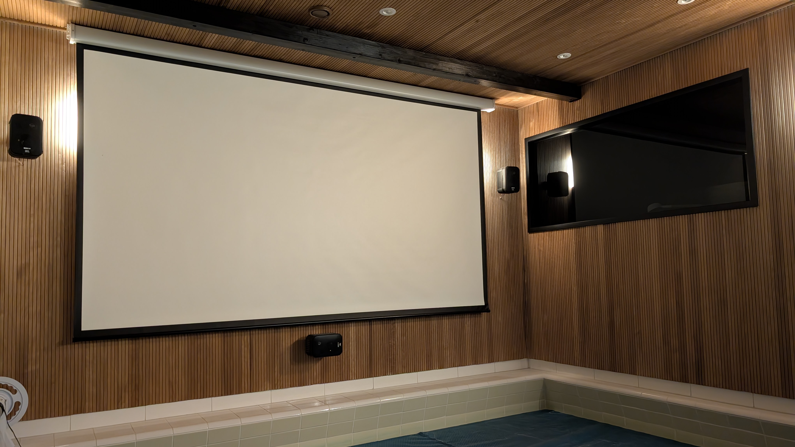
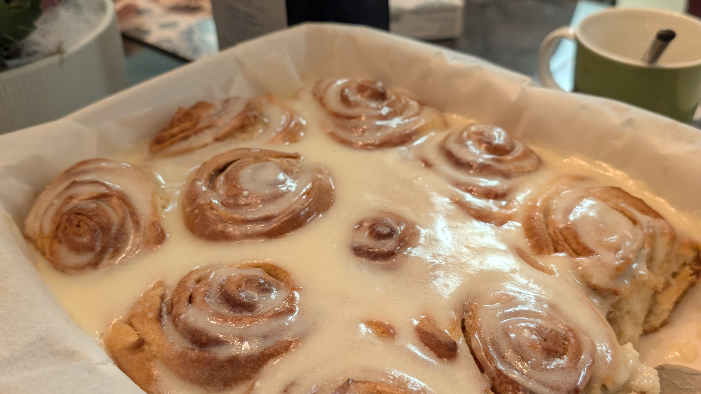
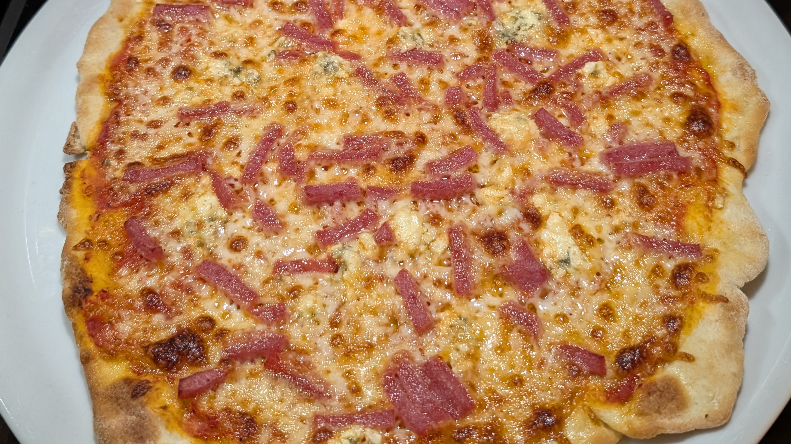
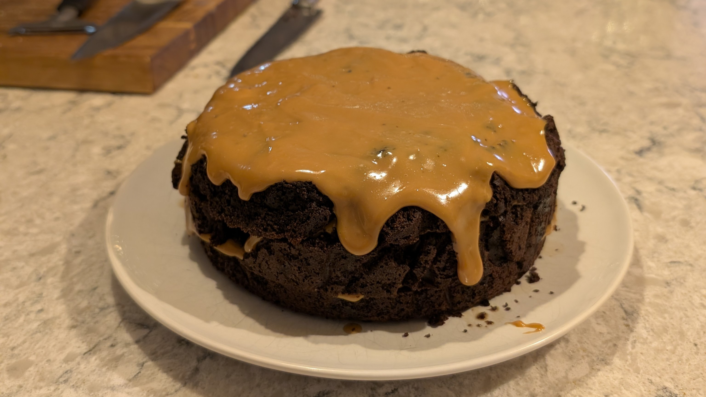
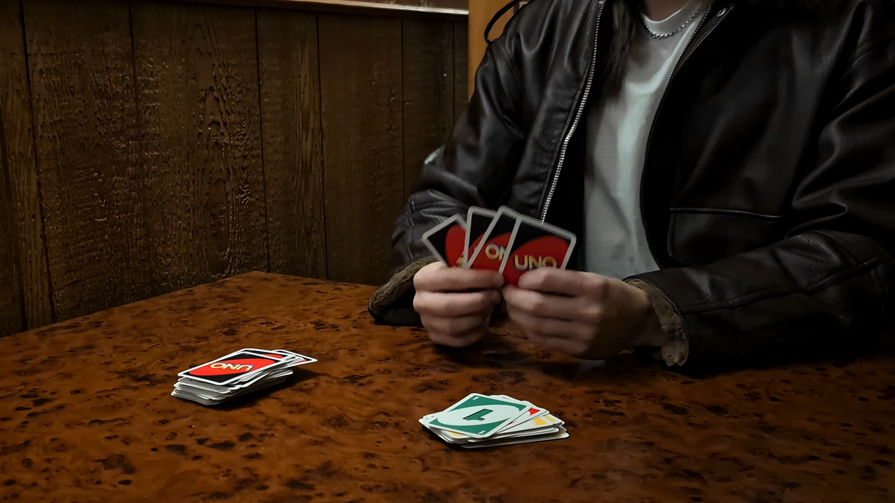
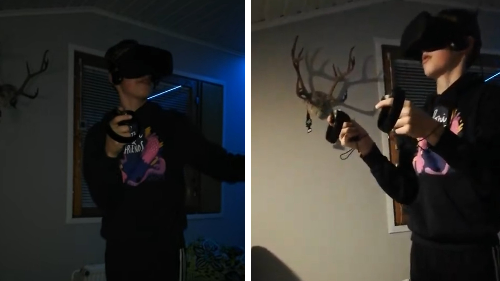
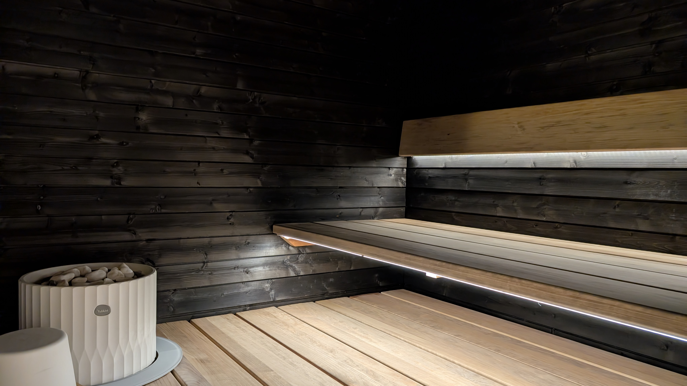

Sali
Kotiteatteri sali on yksi Suomen parhaiten kuulostavimmista saleista. Ääni kulkee seiniä pitkin nätisti omaan korvaan.
Salin valaistus on mielyyttävän tunnelmallinen.
Salin valkokangas on yllättävän suuri ja tykistä tulee laadukkain kuvalaatu koko Suomessa.
Snacks

Cinnamon Rolls
Kotiteatterin Cinnamon Rollsit tehdään aina tunti ennen elokuvan alkua jotta asiakas saa uunituoretta nautintoa. Cinnamon Rollsit ovat meheviä ja pehmeitä. Et ole koko Suomessa tämänlaisia maistanut!

Pizza
Kotiteatterin Pizzaan saat itse valita haluamasi täytteet. Pizzapohja on rapea mutta kuohkea.

Kakku
Kotiteatterin kakku on aina samana päivänä valmistettu. Se on juuri sopivan kostea ja makea. Saat ottaa niin monta palaa kun jaksat.
Activities

Uno peli
Kotiteatterin uutena toimintana olemme uuden Unomies Voittaa Aina elokuvan kunniaksi lisänneet Uno korteilla peluun. Voit kokeilla pystytkö samaan kuin Unomies. Mutta varo vain Marjattaa!

VR-lasit
Kotiteatterin alusta lähtien yhteisömme lempitoimintana on ollut VR-laseilla pelaus. Voit matkustaa alkuperäisiin elokuviin ja kokeilla pystytkö päihittämään suuret viholliset.

Sauna
Kotiteatterissa on tietenkin sauna. Voit käydä elokuvan aikana saunassa ja ikkunan kautta näet saliin.